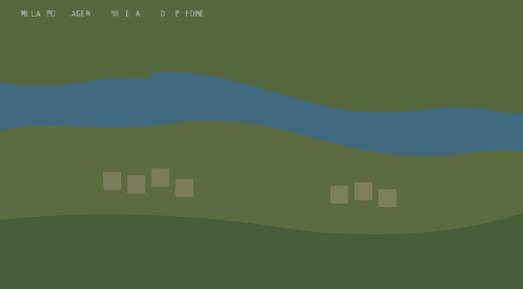
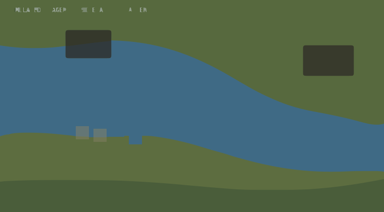

Satellite EO Imagery
Before/after change detection on satellite earth-observation tiles — one of the four sensor feeds (with seismic, river gauges and rainfall) behind the alert engine's dynamic layer. Reaches the backend over national telemetry, not local cell towers, so it keeps arriving when the sector is dark.
Demo — tiles and analysis values are simulated.


Analysis
0.00
Change area (km²)
0
Structures affected
0%
Confidence